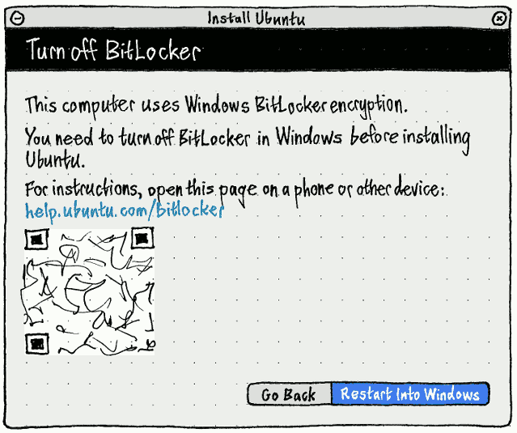
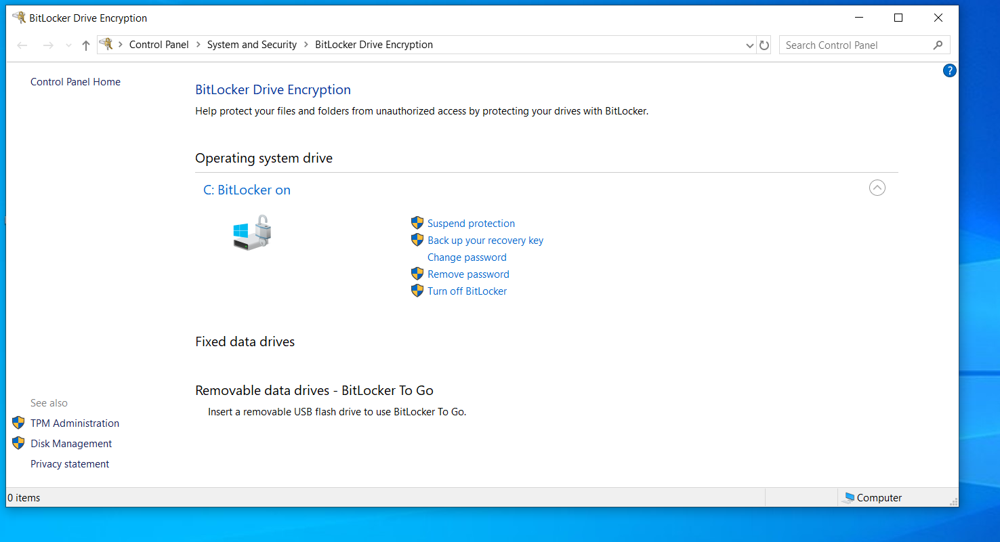
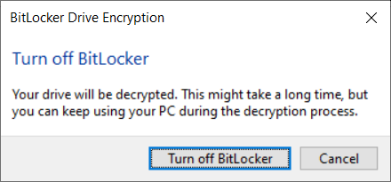
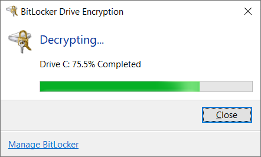
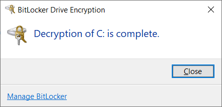

Bitlocker
Overview
BitLocker Drive Encryption is a data protection feature that integrates with the Windows operating system. When activated, it will encrypt the contents of the hard drives in Windows, making the data inaccessible without the correct decryption key. It is designed to minimize the risk of data theft or exposure from lost or stolen computers.
When a user starts their computer and properly authenticates with the correct credentials, BitLocker will decrypt the data and allow seamless usage of the hard drive and the data it contains. Without the correct credentials, the encrypted hard drive data will look like random noise.
BitLocker & Ubuntu installation
If you plan to install Ubuntu side by side with Windows, you need to take into consideration the operational setup on your computer.
- If you are not using BitLocker, Ubuntu will be able to see the correct hard drive structure, including any partitions and data stored on it. This allows the guided wizard to correctly map the data, and safely make adjustments to accommodate the additional installation of Ubuntu alongside Windows.
- If you are using BitLocker, the hard drive contents will not be accessible, and they will appear as random noise. This means that the Ubuntu installer cannot correctly map data, and the additional installation cannot be safely performed without data loss. THe installer can detect if the hard drive is encrypted using BitLocker and prompt the user to make a manual change.

There are three options available:
- The user can cancel the installation of Ubuntu and continue using Windows only.
- The user may decide that the data stored in Windows is not important, and they are willing to overwrite the data contents. The Ubuntu installer can then erase the entire contents of the hard drive and create its own structure (partitions and data). This is a destructive operation, with no option to recover any Windows data.
- The user may decide to turn BitLocker off. This will turn the encryption feature, and the hard drive and its data will be visible and accessible from the Ubuntu installer, allowing it to correctly and safely set up a side-by-side configuration.
Turn BitLocker off
If you decide to proceed with the third option, you will need to do the following:
- Back your data up - any encryption procedure, hard drive structure change or installation of new operating systems on a hard drive that already contains data can potentially lead to a data loss. You need to make sure your personal data is safe. Even simply copying the important files to an external drive can minimize the risk of data loss.
- Quit the Ubuntu installer and reboot the computer into Windows.
- In Windows, open Settings > type Manage BitLocker in the search box. Alternatively, open Control Panel > System and Security > BitLocker Drive Encryption.

Windows will now inform you that it is going to decrypt the data.

This process can take a little bit of time:


- Once this step is complete, reboot the computer, log into Windows, to make sure everything works correctly, and that all your data is intact.
- Reboot your computer again, and launch the Ubuntu installer. At this point, you will be able to proceed with the hard disk configuration step.